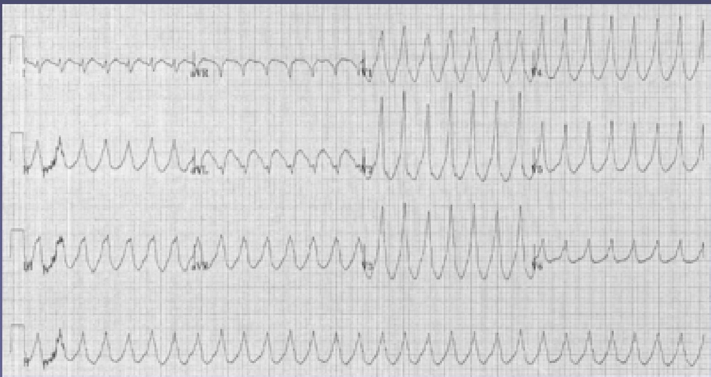
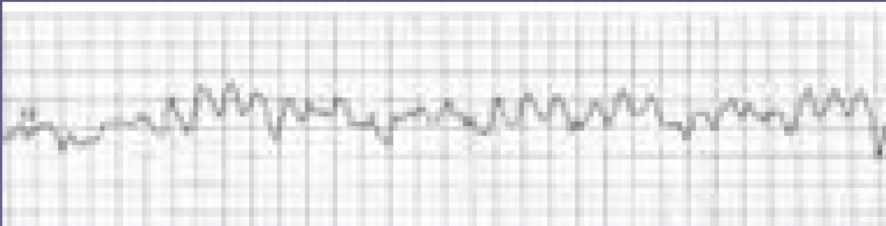

🚑
Topic 11
Ventricular Arrhythmias
01
Ventricular Tachycardia (VT)

Characteristics
- QRS complexes are wide and irregular in shape
- Usually secondary to infarction
Pathophysiology
- Circuits of depolarisation are set up in damaged myocardium
- This leads to recurrent early repolarisation of the ventricle leading to tachycardia
- As the rhythm originates in the ventricles, there is a broad QRS complex
- Hence it is one of the causes of a broad complex tachycardia
Differential Diagnosis: Need to differentiate with supraventricular tachycardia with aberrant conduction.
02
Ventricular Fibrillation (VF)

Critical Emergency
- Completely disordered ventricular depolarisation
- Not compatible with a cardiac output
- Results in a completely irregular trace consisting of broad QRS complexes of varying widths, heights and rates
03
Further Work
- Check out the various quizzes / games available on the Imperial Intranet
- Get doctors on the wards to run through a patient's ECG with you
Knowledge Check
Test Your Understanding
Assess your ability to identify life-threatening ventricular arrhythmias.
Loading quiz...